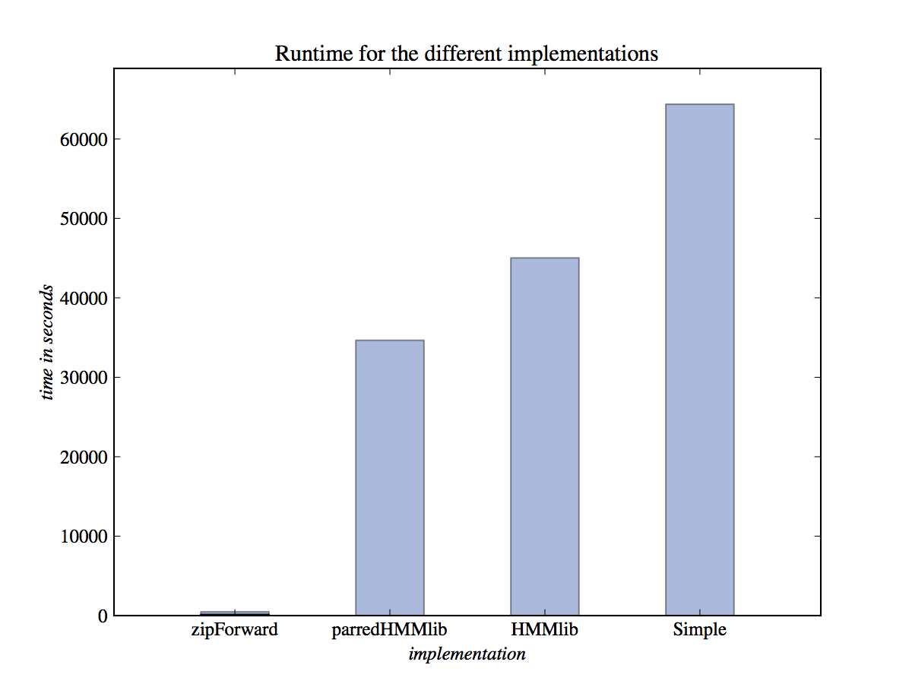

zipHMM - a HMM library for fast likelihood computations
|  |
| The running time for training the Coalescent hidden Markov model (CoalHMM) on a pairwise alignment of the full chromosome 1 from human and chimpanzee using zipHMM, parredHMMlib, HMMlib and a simple implementation of the forward algorithm. The HMMs used in these experiments had 16 states and an alphabet of size 3. The total speed-up obtained by replacing parredHMMlib by zipHMM amounts to a factor of 78. The per-iteration speed-up amounts to a factor of 93. |
zipHMM is a library for hidden Markov models that exploits repetitions in strings to greatly speed up the calculations of the log-likelihood of a sequence. The library is released under the LGPL license. The library analyses the input string and finds repetitive patterns and then reduces the string - similar to how compression algorithms compress strings - by replacing substrings with new symbols. The new symbols correspond to often seen substrings, and we can precompute the probability for an HMM scanning over such strings. The full likelihood can then be computed similar to the traditional forward algorithm, but much faster since the algorithm can skip over often seen substrings. A typical use case of zipHMM is for training HMM parameters, where the likelihood function is often computed for several hundred different sets of HMM parameters while the input sequences are kept stable. zipHMM allows you to preprocess the input sequences once such that you significantly reduce the time used on every likelihood computation (see figure). The preprocessing can be saved to disk in a data structure for later use.
zipHMM has been implemented in C and C++ to achieve
maximal performance, but bindings to Python and R are also supplied
such that the library easily can be used for scripting.
In the following text we describe how to install zipHMM
on Mac OS X and Linux and illustrate how to use the enclosed
Python module and R package.
- Citing zipHMM
- Files
- Build procedure
- Using the Python bindings
- Using the R bindings
- Using the library from C++
- File formats
- Executables
- Literature
- Contact
Citing zipHMM
If you use zipHMM in your research, please cite it in
the following way:
- Andreas Sand, Martin Kristiansen, Christian N. S. Pedersen, Thomas Mailund; zipHMMlib: a highly optimised HMM library exploiting repetitions in the input to speed up the forward algorithm, BMC Bioinformatics 2013, 14(339), doi: 10.1186/1471-2105-14-339.
You can e.g. use this BibTex entry.
Files
- Source: zipHMM-1.0.2.tar.gz
- Mac OS X
- R package: rzipHMM_1.0.2.tar.gz, calibrate.r
- Python module: pyZipHMM_1.0.2.zip
Check out the latest version from Google Code via subversion:
$ svn checkout http://ziphmm.googlecode.com/svn/trunk/ zipHMM-read-only
Build procedure
Install binaries from source
To install zipHMM from source on Linux or Mac OS X download zipHMM-1.0.2.tar.gz and execute the following commands in a terminal:
$ cd <path-to-file> $ tar -xvf zipHMM-1.0.2.tar.gz $ cd zipHMM-1.0.2/ $ cmake . $ make $ bin/calibrate $ make test $ make install
This will also install the python module pyZipHMM
and/or the R package rZipHMM if python and/or R is
installed on your system.
If you do not have permisions to install the package in the default location, you need to replace the fourth command above by something on this form:
$ cmake -DCMAKE_INSTALL_PREFIX=<install prefix> \
-DPYTHON_PREFIX=<python libs> -DR_PREFIX=<R libs> .
Finally, if CMake is not installed on your system, you can download the newest version from http://cmake.org/.
Mac OS X
To install the python
module pyZipHMM on Mac OS X download pyZipHMM_1.0.2.zip and execute
the following commands in a terminal:
$ cd <path-to-file> $ unzip pyZipHMM_1.0.2.zip $ cd pyZipHMM_1.0.2 $ python setup.py install
To install the R package rZipHMM on Mac OS X download
rZipHMM_1.0.2.tar.gz and
execute the following commands in a terminal:
$ cd <path-to-file> $ R CMD INSTALL rZipHMM_1.0.2.tar.gz
If you want to use the parallelized versions of the algorithms in R you furthermore need to download calibrate.r and run this file:
R --slave -f calibrate.r
Linux
To install zipHMM on Linux you need to follow the instructions to install binaries from source. This will also install the R package and/or the python module if R and/or python is installed on your system.
Using the Python bindings
The following example shows a complete
Python program that reads in an input sequence,
Forwarder.fromSequence(...), preprocess it (as part of
reading in the sequence), stores the preprocessed structure to disk,
f.writeToDirectory(...), reads in an HMM from disk,
readHMM(...), and computes the log-likelihood of the HMM,
f.forward(...).
from pyZipHMM import *
f = Forwarder.fromSequence(seqFilename = "example.seq", alphabetSize = 3, minNoEvals = 10)
f.writeToDirectory("example_out")
pi, A, B = readHMM("example.hmm")
print "loglikelihood: ", f.forward(pi, A, B)
pdPath, pdTable = posteriorDecoding("example.seq", pi, A, B)
print "posterior path[0:10]:", pdPath[0:10]
print "posterior table[:0:10]:"
for r in xrange(pdTable.getHeight()):
for c in xrange(10):
print ("%.5f" % pdTable[r,c]), "\t",
print
viterbiPath, viterbi_ll = viterbi("example.seq", pi, A, B)
print "viterbi log likelihood:", viterbi_ll
print "viterbi path[0:10]:", viterbiPath[0:10]
The sequence reader takes the alphabet size as parameter. This is
because we cannot necessarily assume that the observed symbols in the
input sequence are all the possible symbols the HMM can emit, so we
need to know the alphabet size explicitly. It furthermore takes an
optional parameter, minNoEvals, in which the user can
specify an estimate of the number of times the preprocessing will be
reused. The default value of this parameter is 1.
If the preprocessed sequence is already stored on disk, we can simply read that instead like this:
f = Forwarder.fromDirectory(directory = "example_out")
HMMs are implicitly represented simply by a vector and two matrices:
the pi vector of initial state probabilities and the
transition, A, and emission, B,
matrices. These are all represented in a Matrix class. In the example
above these are read from disk using readHMM(...), but
they can also be directly constructed and manipulated in a program. In
our own programs we use this, together with a numerical optimisation
library, to fit parameters by maximising the likelihood.
pi = Matrix(4,1) pi[0,0] = 0.25 pi[1,0] = 0.20 pi[2,0] = 0.20 pi[3,0] = 0.35
An HMM can be written to disk using the function
writeHMM(...):
pi = Matrix(4, 1); A = Matrix(4, 4); B = Matrix(4, 3); # initialize matrices writeHMM(pi, A, B, "out.hmm")
The f.forward(...) method computes the likelihood
sequentially using the preprocessed structure. To use the
multi-threaded parallelisation instead, one simply uses the
f.ptforward(...) function, with the same
parameters, instead.
Using the R bindings
The following example is equivalent to the Python example above:
library('rZipHMM')
f = Forwarder$new()
f$readSeq(seqFilename = "example.seq", alphabetSize = 3, minNoEvals = 10)
f$writeToDirectory("example_out")
hmm = readHMM("example.hmm")
cat("loglikelihood:", f$forward(hmm), "\n")
# cat("loglikelihood:", f$ptforward(hmm), "\n") # parallelized version
pd = posteriorDecoding("example.seq", hmm)
cat("posterior path [1:10]:", pd$path[1:10], "\n")
cat("posterior table [1:10,:]:\n")
pd$table[,1:10]
v = viterbi("example.seq", hmm)
cat("Viterbi log-likelihood:", v$loglik, "\n")
cat("Viterbi path [1:10]:\n")
v$path[1:10]
hmm is a list on the form list("pi" = pi, "A" = A,
"B" = B), where pi is an ordinary R vector and
A and B are ordinary R matrices. In the
example above hmm is read from disk using the function
readHMM(...), but it can also be build and written to
disk in the code:
pi = as.vector(c(0.25, 0.75))
A = matrix(c(0.25, 0.40, 0.75, 0.60), nrow = 2, ncol = 2)
B = matrix(c(0.25, 0.30, 0.25, 0.40, 0.50, 0.30), nrow = 2, ncol=3)
hmm = list("pi" = pi, "A" = A, "B" = B)
writeHMM(hmm, "out.hmm")
To read a data structure that has been saved previously the method
f$readFromDirectory(...) is used:
f = Forwarder$new()
f$readFromDirectory("example_out")
Using the library from C++
The following example is equivalent to the Python example above:
#include "zipHMM/hmm_io.hpp"
#include "zipHMM/forwarder.hpp"
#include "zipHMM/matrix.hpp"
#include "zipHMM/viterbi.hpp"
#include "zipHMM/posterior_decoding.hpp"
#include <iostream>
#include <vector>
using namespace zipHMM;
int main(int argc, char **args) {
Forwarder f;
size_t alphabet_size = 3;
f.read_seq("example.seq", alphabet_size);
f1.write_to_directory("example.out");
Matrix pi, A, B;
read_HMM(pi, A, B, "example.hmm");
std::cout << "log-likelihood: " << f.forward(pi, A, B) << std::endl;
// std::cout << "log-likelihood: " << f.pthread_forward(pi, A, B) << std::endl; # parallelized version
std::vector<unsigned> pd_path;
Matrix pd_table;
posterior_decoding("example.seq", pi, A, B, pd_path, pd_table);
std::cout << "posterior path[0:10]: ";
for(size_t i = 0; i < 10; ++i)
std::cout << pd_path[i] << " ";
std::cout << std::endl;
std::cout << "posterior table column 0 - 9: " << std::endl;
for(size_t r = 0; r < 2; ++r) {
for(size_t c = 0; c < 10; ++c) {
std::cout << pd_table(r, c) << "\t";
}
std::cout << std::endl;
}
std::vector<unsigned> viterbi_path;
double viterbi_ll = viterbi("example.seq", pi, A, B, viterbi_path);
std::cout << "viterbi loglikelihood: " << viterbi_ll << std::endl;
std::cout << "viterbi path[0:10]: ";
for(size_t i = 0; i < 10; ++i)
std::cout << viterbi_path[i] << " ";
std::cout << std::endl;
return 0;
}
In this example pi, A and B are
read from disk using the function readHMM(...), but they are
objects of the class Matrix and can be build and written
to the disk in the code:
Matrix pi(4, 1); pi(0,0) = 0.25; pi(1,0) = 0.20; pi(2,0) = 0.20; pi(3,0) = 0.35; Matrix A(4, 4); // ... initialize A Matrix B(4, 3); // ... initialize B writeHMM(pi, A, B, "out.hmm");
To read a data structure that has been saved previously the method
f.read_from_directory(...) is used:
Forwarder f;
f$read_from_directory("example_out");
File formats
Hidden Markov models
A hidden Markov model can be encoded in a text file in the following format:
no_states 2 alphabet_size 3 pi 0.17 0.83 A 0.49 0.51 0.18 0.82 B 0.69 0.06 0.25 0.03 0.51 0.46
Sequences
An input sequence of observables is encoded as a space separated sequence over the alphabet {0, 1, ..., N - 1}, where N is the alphabet size of the hidden Markov model. E.g:
0 0 0 0 2 2 1 1 1 2 2 2 2 1 2 0 2 0 1 1 2 1 2 1 0 2 2 2 0 1 2 1 2 0 1
Executables
calibrate
Usage:
$ bin/calibrate
Finds the optimal number of threads to use in the parallelized version of the forward algorithm.
build_forwarder
Usage:
$ bin/build_forwarder -s <sequence filename> -M <alphabet size> -o <output directory> [-N <number of states>]*
Builds a Forwarder object from the sequence in the file specified in
<sequence filename> and writes it to the directory
specified in <output directory>. <alphabet
size> should be the size of the alphabet used in the
observed sequence, and the file specified in <sequence
filename> should contain a single line containing white
space separated integers between 0 and <alphabet
size> - 1. The list of HMM sizes to generate the data
structure for can be specified using the -N parameter.
Examples:
$ bin/build_forwarder -s example.seq -M 3 -o example_out $ bin/build_forwarder -s example.seq -M 3 -o example_out -N 2 $ bin/build_forwarder -s example.seq -M 3 -o example_out -N 2 -N 4 -N 8 -N 16
forward
Usage:
$ bin/forward (-s <sequence filename> -m <HMM filename> [-e number of expected forward calls] [-o <output directory>] )
| (-d <preprocessing directory> -m <HMM filename>) [-p]
Runs the forward algorithm and outputs the loglikelhood. This executable can be called in two different ways:
$ bin/forward -s example.seq -m example.hmm -e 500 -o example_out $ bin/forward -d example_out/ -m example.hmm
In the first example the loglikelihood is evaluated based on the observed sequence in example.seq and the HMM specified in example.hmm. In the second example the loglikelihood is evaluated based on the previously saved data structure in example_out/ and the HMM specified in example.hmm. In both cases the -p parameter can be used for invoking the parallelized version. In the first example the user can optionally choose to save the data structure in eg. example_out/ using the -o parameter:
$ bin/forward -s example.seq -m example.hmm -e 500 -o example_out/
generate_hmm
Usage:
$ bin/generate_hmm <number of states> <alphabet size> <HMM filename>
Generates a random HMM with <number of states> states and <alphabet size> observables, and saves it to <HMM filename>.
generate_seq
Usage:
$ bin/generate_seq <HMM filename> <length> <observed sequence output filename> <state sequence output filename>
Given an HMM specified in <HMM filename>, runs the HMM for <length> iterations and saves the resulting sequence of observables to <observed sequence output filename> and the resulting sequence of hidden states to <state sequence output filename>.
Literature
The algorithms implemented in zipHMM was developed by
Andreas Sand,
Martin Kristiansen, Christian N. S. Pedersen and Thomas
Mailund. Explanations of the algorithms together with details on
their implementation and performance measurements are given in
- zipHMMlib: a highly optimised HMM library exploiting repetitions in the input to speed up the forward algorithm Andreas Sand, Martin Kristiansen, Christian N. S. Pedersen, Thomas Mailund; BMC Bioinformatics 2013, 14(339), doi: 10.1186/1471-2105-14-339.
Contact
If you encounter any problems or have questions about using
zipHMM, please contact Andreas Sand.